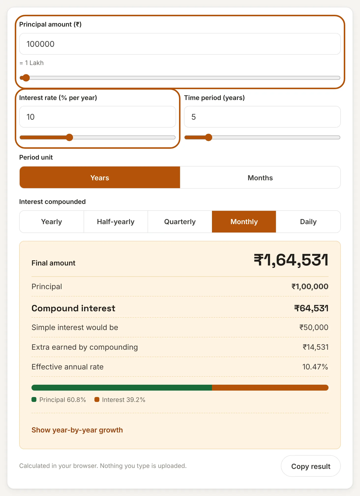
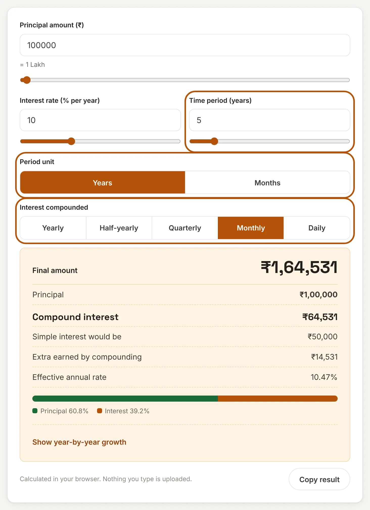
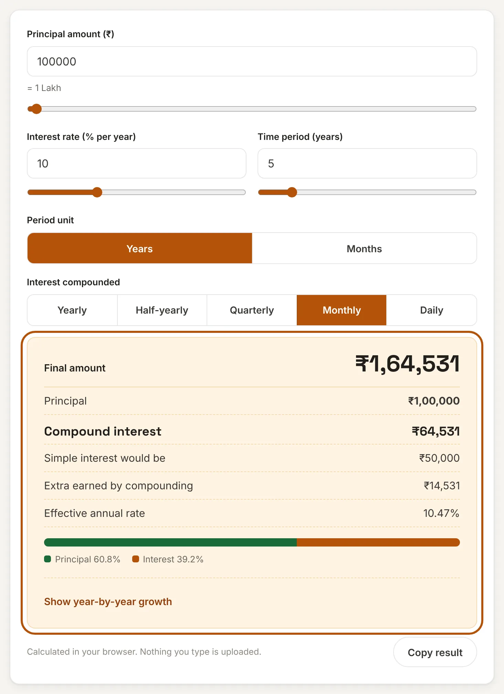
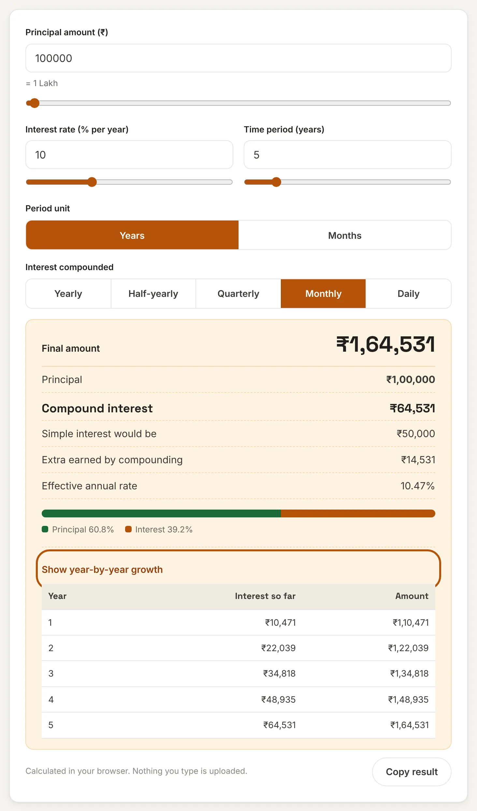

What is compound interest?
Compound interest is interest on interest. In the first period you earn interest on your principal. From then on, you earn interest on the principal and on the interest already added. Because the base keeps growing, the amount grows faster every period, not at a steady pace.
This compound interest calculator shows the result in seconds. Enter the principal, the yearly rate, the time and how often the interest is compounded, and it gives the final amount, the interest earned, how much more you earned than with simple interest, and the effective annual rate.
How to use this compound interest calculator
Step 1: Enter the principal and the rate
Type the amount you start with and the yearly interest rate, or drag the sliders. The words under the amount, such as "1 Lakh", help you catch a missing zero.

Step 2: Set the time and how often interest is added
Enter the time in years or switch to months. Then choose how often the interest is compounded: yearly, half-yearly, quarterly, monthly or daily. If you are not sure, use the compounding your bank or scheme states.

Step 3: Read the result
You see the final amount, the compound interest, the interest simple interest would have given, and the extra you gain from compounding. The effective annual rate shows what the rate really works out to over one year.

Step 4: See the growth year by year
Open Show year-by-year growth to see the amount at the end of every year. Use Copy result to save a one-line summary.

Compound interest formula
Here A is the final amount, P the principal, r the yearly rate in percent, n the number of times interest is compounded in a year (1, 2, 4, 12 or 365) and t the time in years. The compound interest is A minus P. Simple interest, for comparison, is P × r × t ÷ 100.
Worked examples
| Principal | Rate | Time | Compounding | Final amount |
|---|---|---|---|---|
| ₹1,00,000 | 10% | 5 years | Yearly | ₹1,61,051 |
| ₹50,000 | 8% | 3 years | Quarterly | ₹63,412 |
| ₹5,00,000 | 9% | 10 years | Yearly | ₹11,83,682 |
| ₹1,00,000 | 12% | 10 years | Monthly | ₹3,30,039 |
| ₹2,50,000 | 7.5% | 25 years | Monthly | ₹16,20,720 |
How compounding frequency changes the result
The more often interest is added, the more you earn, but the gain is smaller than most people expect. Here is ₹1,00,000 at 10% for 5 years:
| Compounded | Final amount | Effective annual rate |
|---|---|---|
| Yearly | ₹1,61,051 | 10.00% |
| Half-yearly | ₹1,62,889 | 10.25% |
| Quarterly | ₹1,63,862 | 10.38% |
| Monthly | ₹1,64,531 | 10.47% |
| Daily | ₹1,64,861 | 10.52% |
Going from yearly to daily adds about ₹3,800 over five years. Time matters far more than frequency.
Why time matters so much
Compare ₹1,00,000 at 10% compounded yearly with the same money earning simple interest:
| Years | Simple interest total | Compound interest total |
|---|---|---|
| 5 | ₹1,50,000 | ₹1,61,051 |
| 10 | ₹2,00,000 | ₹2,59,374 |
| 20 | ₹3,00,000 | ₹6,72,750 |
| 30 | ₹4,00,000 | ₹17,44,940 |
After 5 years the gap is small. After 30 years the compound total is more than four times the simple interest total. A handy shortcut is the rule of 72: divide 72 by the yearly rate to estimate the years to double your money. At 8% that is about 9 years, and the exact figure is 9.006 years.
The same maths works against you on loans and credit card dues, where unpaid interest is added to the balance and then charged interest again.
Frequently asked questions
What is the difference between simple and compound interest?
Simple interest is calculated only on the original principal. Compound interest is calculated on the principal plus the interest already earned, so it grows faster over time.
Which compounding frequency should I choose?
Use the one your bank, scheme or lender states. Most Indian bank FDs compound quarterly and many loans compound monthly.
What is the effective annual rate?
It is the rate that, compounded once a year, would give the same result as your stated rate with more frequent compounding. For example, 10% compounded monthly is an effective 10.47% a year.
How long does it take to double my money?
Divide 72 by the yearly rate for a quick estimate. At 6% it takes about 12 years, at 8% about 9 years and at 12% about 6 years.
Does this calculator include regular monthly deposits?
No. It assumes a single deposit that stays untouched. For regular deposits use the SIP Calculator, and for a bank deposit with its own terms use the FD Calculator.
Is my data sent to a server?
No. This tool runs entirely in your browser. What you enter is never uploaded or stored.
Disclaimer: This tool gives estimates for convenience and is not financial, tax or legal advice. Real products may round interest, change rates or charge tax. See our disclaimer.